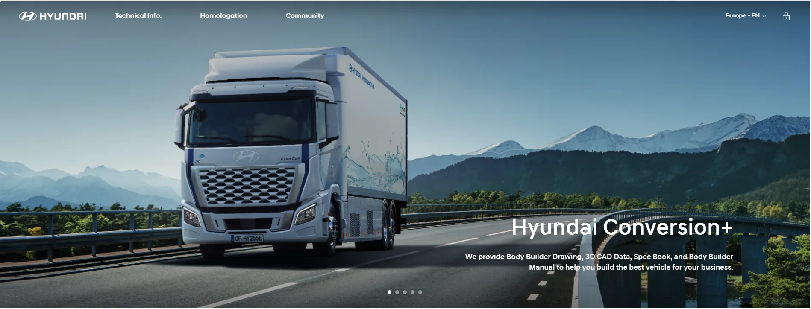
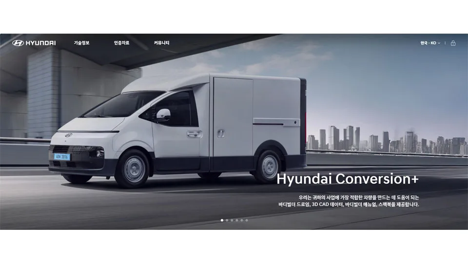
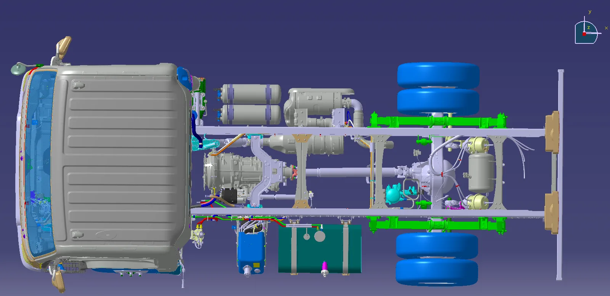
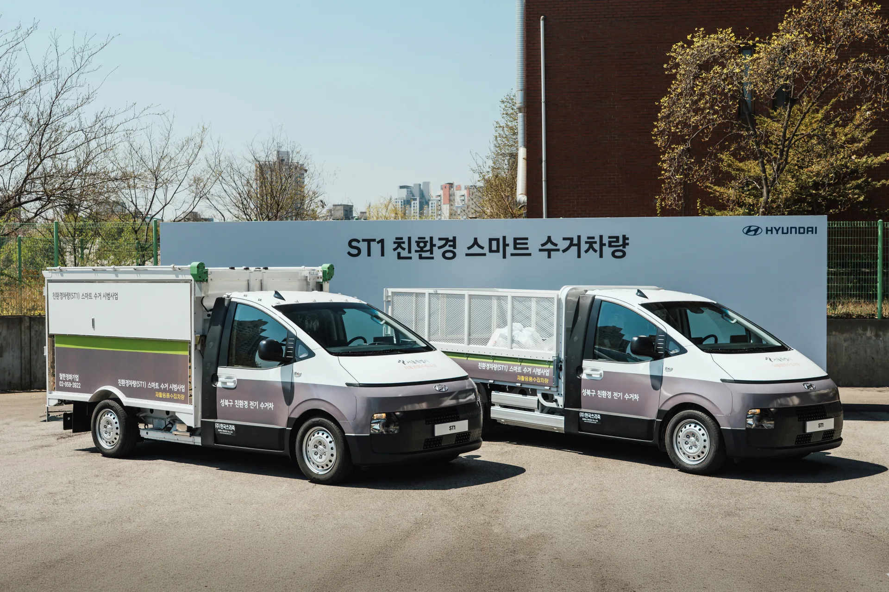
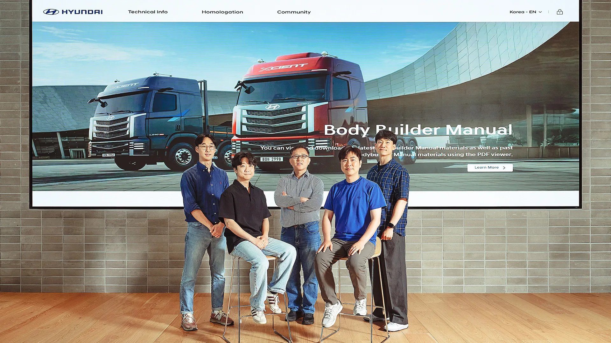

▲ 현대자동차가 새롭게 개편한 상용차 기술정보 플랫폼 '현대 컨버전 플러스'. 전 세계 약 120개국에서 15개 언어로 이용할 수 있다
1. 특장업체 120개국 대상, '현대 컨버전 플러스' 오픈
현대자동차가 2026년 4월 특장업체(바디빌더)를 위한 상용차 기술정보 플랫폼 '현대 컨버전 플러스(Hyundai Conversion+)'를 새롭게 열었다. 기존에 운영하던 국내용 상용 기술정보 포털을 대폭 개편한 것으로, 특장업체들의 의견을 적극 반영해 사용자 편의성을 강화한 것이 특징이다. 국내는 물론 유럽, 아시아, 중남미, 아프리카, 중동 등 전 세계 약 120개국에서 15개 언어로 접속할 수 있으며, PC와 모바일 모두 지원한다.

▲ 현대 컨버전 플러스 국내 페이지 초기 화면. 바디빌더 드로잉, 3D CAD 데이터, 바디빌더 매뉴얼, 스펙북을 제공한다는 문구가 담겼다 ⓒ 현대자동차그룹
2. 특장업체에게 왜 이런 플랫폼이 필요한가
특장차(特裝車)는 완성차 업체가 만든 기본 차량(섀시 캡)을 특장업체가 목적에 맞게 개조해 만드는 차량을 말한다. 탑차·냉동탑차·구급차·소방차·청소차·크레인트럭 등이 대표적이며, 완성차 업체가 직접 만드는 것이 아니라 주로 별도로 등록된 자동차제작자(특장업체)들이 이 작업을 담당한다. 이 과정에서 특장업체가 기본 차량의 정확한 치수·구조·전장 배선 정보를 알지 못하면 설계 오류나 안전 문제로 이어질 수 있다. 기존에는 2D 평면 도면 위주로 정보가 제공돼, 복잡한 형상을 3차원으로 정확히 파악하기 어렵다는 목소리가 특장업체들 사이에서 꾸준히 나왔다.
▲ 현대 스타렉스 기반으로 제작된 119 구급차. 구급차처럼 완성차를 특장업체가 개조해 만드는 차량이 적지 않아, 정확한 기술정보 지원이 중요하다 ⓒ Wikimedia Commons(Sim1992, CC BY-SA 4.0)
📍 바디빌더(특장업체)란
바디빌더는 완성차 업체로부터 엔진·프레임·운전석만 갖춘 '섀시 캡(Chassis Cab)' 상태의 차량을 공급받아, 용도에 맞는 적재함·설비를 얹어 특장차로 완성하는 업체를 뜻한다. 국내에서는 별도의 자동차제작자 등록을 마친 중소·중견 업체들이 이 역할을 맡고 있으며, 완성차 업체의 기술정보 지원 수준이 특장차 품질과 직결된다.
3. 2D에서 3D로 — 무엇이 어떻게 바뀌었나
새 플랫폼의 핵심 변화는 기존 2D 평면 도면에 입체적인 3D 도면을 추가로 제공한다는 점이다. 3D CAD 데이터를 통해 사양별 외형 치수, 부품 배치, 지상고 등의 정보를 입체적으로 확인할 수 있게 되면서, 특장차 제작 과정에서 발생할 수 있는 설계 오류를 최소화하고 품질과 안전성을 높일 수 있다는 것이 회사 측 설명이다. 이 밖에도 바디빌더 매뉴얼(기본 차량 정보, 변경 가능 범위와 방법, 주의사항)과 법규 인증 자료를 함께 제공하며, 소형부터 대형까지 전 차종을 한 번에 검색할 수 있는 통합검색 기능과 개인화된 마이페이지 기능도 새로 추가됐다.
| 항목 | 내용 |
|---|---|
| 오픈 시점 | 2026년 4월 |
| 서비스 범위 | 전 세계 약 120개국, 15개 언어 |
| 제공 정보 | 바디빌더 매뉴얼, 바디빌더 드로잉(2D+3D), 법규 인증 자료 |
| 신규 기능 | 3D CAD 데이터, 전 차종 통합검색, 마이페이지, 테크니컬 핫라인 |
| 접근 방식 | PC·모바일 모두 지원 |

▲ 현대 컨버전 플러스에서 제공하는 마이티 3D CAD 도면 예시. 섀시 구조와 부품 배치를 입체적으로 확인할 수 있다 ⓒ 현대자동차그룹
4. 테크니컬 핫라인과 실제 활용 사례
현대차는 현장에서 발생하는 기술적 이슈에 신속히 대응하기 위해 해외 현지법인과 본사, 연구소를 잇는 '테크니컬 핫라인'도 구축해 운영할 예정이라고 밝혔다. 특장업체가 제작 과정에서 예상치 못한 문제에 부딪혔을 때, 국가와 시차에 관계없이 빠르게 기술 지원을 받을 수 있도록 하는 체계다. 실제로 국내에서는 현대차의 전동화 상용 모델 ST1을 기반으로 한 친환경 스마트 수거차량이 지자체 시범사업에 투입되는 등, 섀시 캡 차량이 다양한 특장차로 재탄생하는 사례가 이어지고 있다.

▲ 현대 ST1을 기반으로 특장업체가 제작한 친환경 스마트 수거차량. 서울 성북구 재활용품 수거 시범사업에 투입됐다 ⓒ 현대자동차그룹
플랫폼 개발에 참여한 현대차 담당자들은 특장업체 현장의 목소리를 직접 반영하는 데 공을 들였다고 설명한다. 국내 특장업체 한국쓰리축의 유구현 대표는 "중소 특장업체들이 글로벌 수준의 품질 경쟁력을 갖출 수 있는 든든한 기술적 토대가 마련됐다는 점에서 매우 긍정적"이라고 평가했다.

▲ 현대 컨버전 플러스 개발을 담당한 실무진. 뒤편 화면에는 엑시언트 트럭과 'Body Builder Manual' 메뉴가 표시돼 있다 ⓒ 현대자동차그룹
5. 국내 특장차 산업과 앞으로의 과제
국내 특장차 산업은 등록 규모만 놓고 봐도 결코 작지 않다. 2020년 말 기준 국내에 등록된 특장차는 약 118만 3,000여 대로, 전체 상용차 등록대수의 26.3%에 달하는 것으로 집계된 바 있다. 특장차는 자동차제작자로 별도 등록한 업체만이 제작할 수 있으며, 현대차·기아 등 대형 완성상용차 업체들은 직접 제작보다는 이번 플랫폼처럼 기술정보를 지원하는 OEM(주문자상표부착생산) 협력 구조를 취하는 경우가 많다. 많은 특장업체가 중소·중견 규모인 만큼, 완성차 업체의 기술정보 개방 수준이 국내 특장차 산업 전반의 품질과 안전 수준을 좌우하는 요인으로 꼽힌다.
현대차는 이번 플랫폼을 시작으로 특장업체와의 협력 채널을 지속적으로 넓혀갈 계획이라고 밝혔다. 플랫폼 상세 정보는 현대자동차그룹 뉴스룸에서 확인할 수 있다. 바로가기
✅ 현대 컨버전 플러스, 이것만은 확인하세요
· 2026년 4월 오픈, 전 세계 약 120개국·15개 언어로 서비스
· 바디빌더 매뉴얼·드로잉(2D+3D)·법규 인증 자료 통합 제공
· 3D CAD 데이터로 설계 오류 최소화, 전 차종 통합검색 지원
· 본사·해외법인·연구소를 잇는 '테크니컬 핫라인' 구축
· 국내 특장차 등록대수 약 118만 대(2020년 기준, 상용차의 26.3%)
6. 정리
현대 컨버전 플러스는 완성차 업체가 특장업체에게 도면 한 장, 인증 자료 하나까지 더 정확하게 공유하려는 시도라는 점에서 눈여겨볼 만하다. 2D에서 3D로 넘어간 도면 정보와 전 세계를 잇는 테크니컬 핫라인은, 구급차·소방차·수거차량처럼 우리 일상 곳곳에서 쓰이는 특장차의 품질과 안전을 뒷받침하는 인프라이기도 하다. 120개국 특장업체를 하나의 플랫폼으로 묶은 이번 시도가 국내외 특장차 산업의 품질 상향으로 이어질지 지켜볼 대목이다.